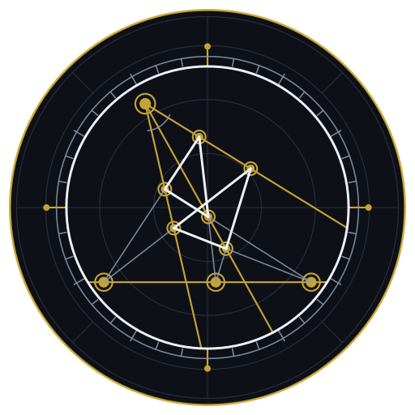

Geometric Codes & Proportions¶

Why should I believe this is true? Every geometric system answers that question
differently. Euclid points to the postulates and the reader. LeanEuclid and GeoCoq
point to a proof kernel and a set of geometric axioms. mathlib points to the real
numbers alone. AlphaGeometry points to a rule list and a numeric diagram. A CAS such
as geometor.model points to an exact figure whose relations reduce to zero.
CODES compares twelve systems by their truth foundation: what exists, what is assumed, how new truths are derived, what evidence is left behind, and what must be trusted. Exploring the Atlas below is the quickest way in. Click a row to expand a system, or switch to Comparison axes.
The Truth Ladder¶
The ladder ranks the strength of the claim each system certifies. It does not rank the systems’ quality. Dashed edges show routes a system could take to climb.
Start here¶
Truth Foundations: the Truth Ladder, the seven-layer Trust Stack, and who trusts what.
System Cards: one card per system, all with the same template.
Showcase: One Theorem, Many Foundations: five theorems realized side by side, including exact L1 and generic L2 witnesses from GEOMETOR.
Connections: lineage and translation bridges, shared ontology, and shared principles, drawn as graphs.
Principle Catalog: the searchable catalog of 667 discovered principles.
Findings: the source-audit results behind every card.

One Figure, Eleven Languages: Euclid’s opening vesica piscis (A, B, circles AB and BA, equidistant poles F and E on line AB) viewed simultaneously through diagrammatic Formal System E, Tarski’s point-only ontology, mathlib4 affine torsor spaces, DD+AR clauses, 2D Conformal Geometric Algebra null-cone blades, \(\mathbb{CP}^2\) homogeneous matrices, Oliver Byrne’s chromatic value-token glyphs, and geometor.model’s exact \(\mathbb{Q}(\sqrt{3})\) DAG. Hover any :g: badge or diagram locus to illuminate its corresponding element.¶
Reference¶
Hierarchy: paradigms of geometric formalization and the GEOMETOR architecture.
Syntax Field Guide & Symbol Decoder: a decoder for formal symbols, binders, predicates, blades, and Byrne’s value-tokens.
Systems: long-form dossiers for each system.
Rosetta Stone Benchmarks: seven constructions implemented across systems.
Opus Coverage Matrix (69 Topics x 11 Systems): the topic × system coverage matrix.